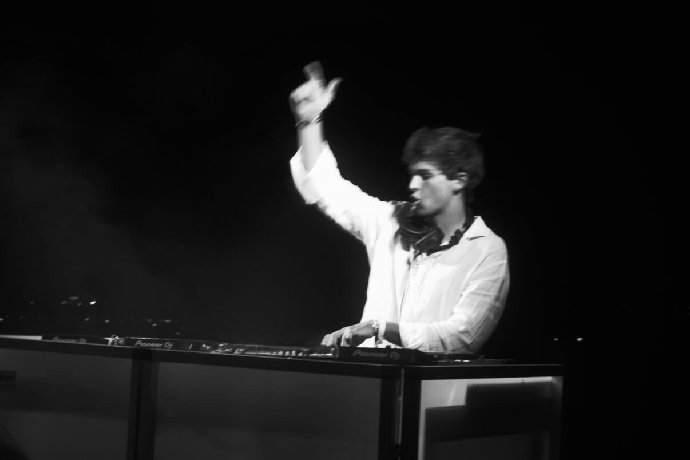
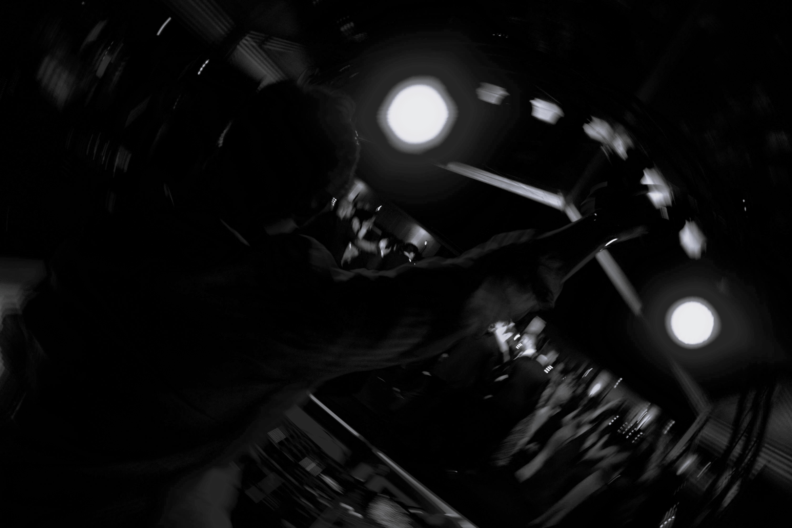
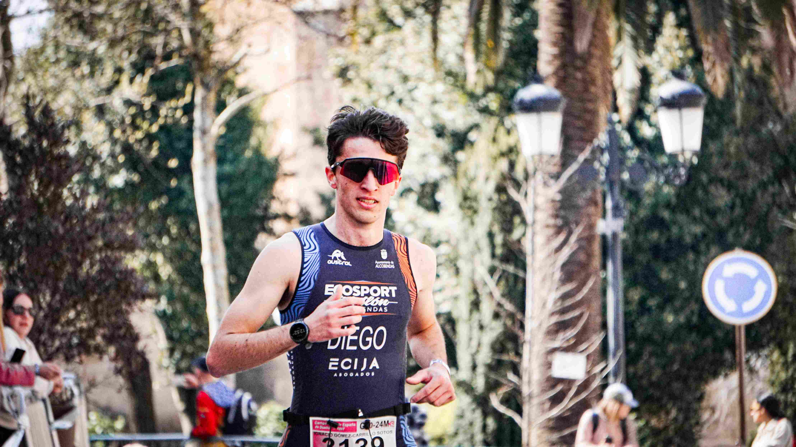
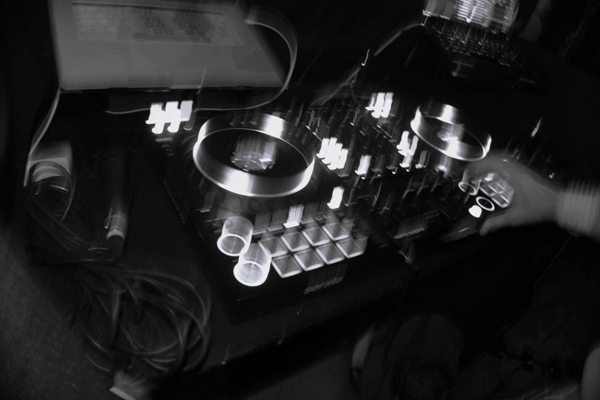
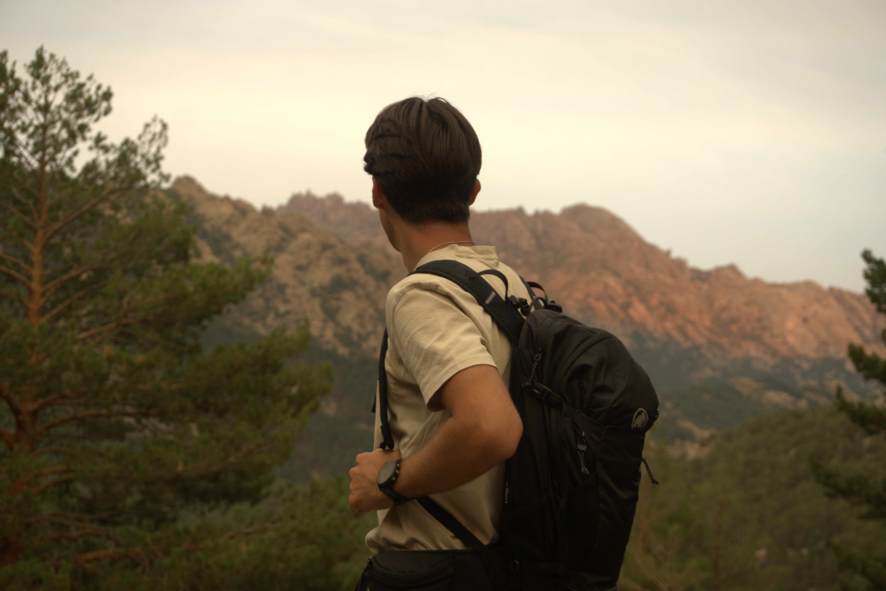
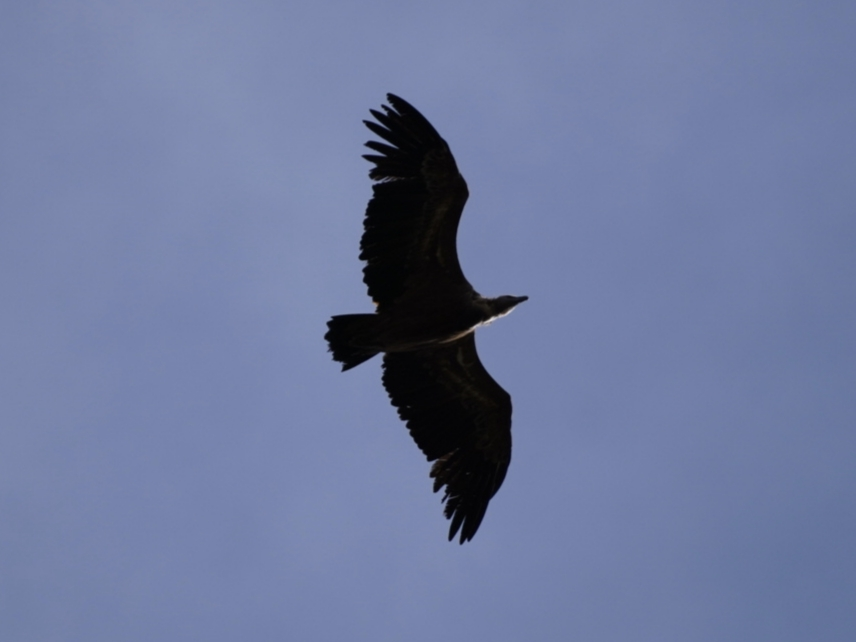

Eventos
Visitar web
Fotógrafo & Videógrafo
Mi historia comenzó a los 15 años, cuando solía escaparme al campo para conectar con la naturaleza y disfrutar de esos momentos. En aquella época no tenía grandes recursos, solo un teléfono móvil, pero con él empecé a capturar imágenes de los paisajes, las vistas y pequeños detalles que para mí tenían un significado especial. Algunas de esas fotografías todavía las conservo en mi cuenta privada de Instagram.
Con el tiempo entendí que la fotografía era mucho más que hacer una simple imagen. Era guardar recuerdos, transmitir emociones y encontrar una forma diferente de ver el mundo. Cada captura representaba un momento, una sensación y una historia.
Todos cometemos errores, pero no todos tenemos el valor de volver a empezar. La fotografía y la videografía me demostraron que detrás de un simple "CLICK" puede existir mucho más: un recuerdo, una emoción y una experiencia que permanece.
En septiembre de 2025 comencé a trabajar en una empresa de informática. No solo lo hice para ahorrar, sino también para aprender, crecer y conseguir los recursos necesarios para empezar a construir algo propio. Gracias a ese esfuerzo, hoy puedo dar mis primeros pasos dentro del mundo de los eventos y la creación audiovisual.
Mi nombre es Ignacio, nací en marzo de 2005 y en 2026, con 21 años, siento que ha llegado el momento de dar un paso adelante.
En noviembre de 2025 conseguí comprar mi primera cámara profesional, una Sony A6400, mediante financiación. Actualmente sigo ahorrando para conseguir más material y seguir mejorando.
Hasta ahora he tenido la oportunidad de participar en diferentes eventos y proyectos: fiestas, sesiones con amigos, deportes como triatlón, bodas, discotecas y trabajos para empresas.
Este es solo el comienzo. Espero que mis futuros servicios puedan transmitiros calidad, emoción y, sobre todo, un trato cercano y familiar. Porque cada historia merece ser capturada de una manera única.
Fotógrafo y videógrafo especializado en fotografía deportiva, naturaleza, eventos y creación de contenido audiovisual.
Cada colaboración representa una historia, un reto y la confianza depositada en mi trabajo.
Una selección de algunos momentos capturados.


Cobertura profesional para distintos tipos de proyectos.

Capturamos la energía del Show

Cobertura Profesional.

Imagen corporativa | Publicidad.

Retratos únicos
Contenido audiovisual

Naturaleza salvaje
Opciones de cobertura según el tipo de evento.
Sencilla, cómodo y sin preocupaciones.
LlamarEquilibrio perfecto, cómodo y económico, a nuestro gusto con vuestra confianza.
LlamarPara los que buscan el máximo potencial y lo mejor de nuestros recursos, con libertad para aportar opiniones y decisiones y con confianza mutua.
LlamarY la hacemos realidad.